Overview
Site Name
Stellum
Reason: "Stellum" is derived from the Latin word "Stella" (Star).
It sounds modern, scientific, and elegant, fitting perfectly for a gallery of astronomical imagery.
Optional Domain: stellum-space.org
Site Purpose
The purpose of Stellum is to make the vast data of the cosmos accessible and visually engaging. The site leverages NASA's open APIs to provide a curated "Astronomy Picture of the Day" experience and a searchable gallery of deep-space imagery. It serves as an educational hub where users can view high-definition space photography and read scientific explanations for celestial events.
Scenarios
Target Audience Questions:
- "I am a science teacher; where can I find high-quality, reliable images of nebulas and galaxies to show my students today?"
- "I want to see what the 'Picture of the Day' is from NASA without navigating their complex legacy website. How can I see it quickly with the explanation?"
Branding
Website Logo

Color Scheme
The design follows a "Dark Mode" aesthetic to mimic the feeling of looking into space.
| #0B0D17 | #D0D6F9 | #FFFFFF | #383B4B |
- Primary (#0B0D17): Deep Space Blue/Black. Used for the main background of the page.
- Secondary (#D0D6F9): Fog Blue. Used for paragraph text and secondary information.
- Accent (#FFFFFF): Pure White. Used for main headings (H1, H2) to stand out like stars.
- Action (#383B4B): Lighter Navy. Used for card backgrounds and buttons.
Typography
Headings: "Orbitron"
A futuristic, geometric sans-serif font that evokes a sense of space exploration and technology. It is used for all headings (H1, H2, H3) to create a strong visual hierarchy and thematic consistency.
Body Text: "Exo 2"
A clean, modern sans-serif font that ensures readability while maintaining a sleek, space-age aesthetic. It is used for all paragraph text and secondary information.